这里不会讲到所有的技巧（我也不会那么多），只讲解本人实战中用到的比较多的技巧，可应付一般难度数独。
（和小向的教程统一命名）
注：以下用 r 表示行，用 c 表示列，用 b 表示宫。
基本技巧
基本技巧十分简单，即便不教大部分人也会。虽然下面的例子用图都使用的全标策略（标注全部候选数），但这些技巧在直观策略（不标候选数）下也很容易使用。
唯一余数 | Naked Single
利用排除法，某一格可能且仅可能填某一个数字。
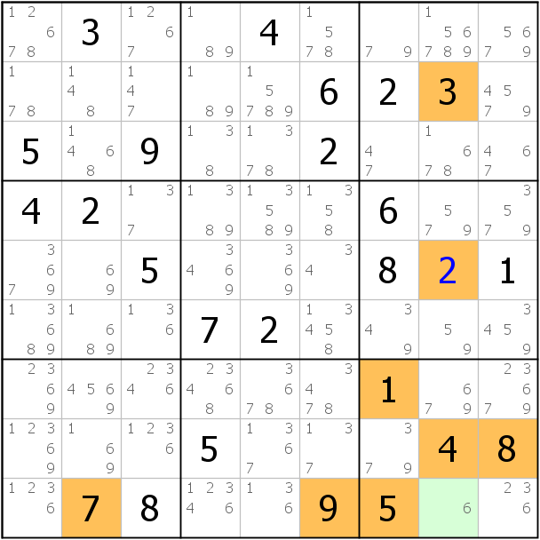
根据橙色格子进行排除，r9c8处只能填6。
排除法 | Hidden Single
某个数字在某一个区（行/列/宫）里仅有一处可以填。
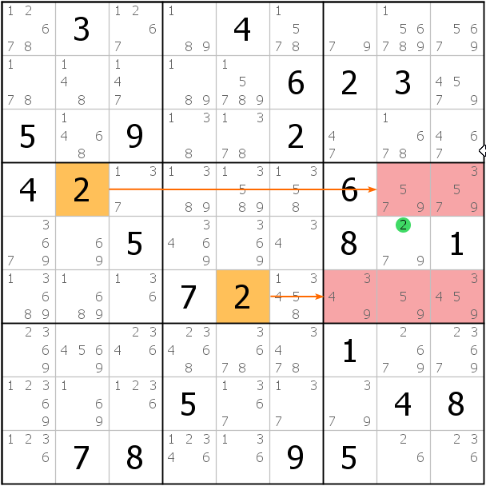
对于b6，r4c2和r6c5中的2导致r4c89和r6c789不能填2，所以b6内只有r5c8可以填2。
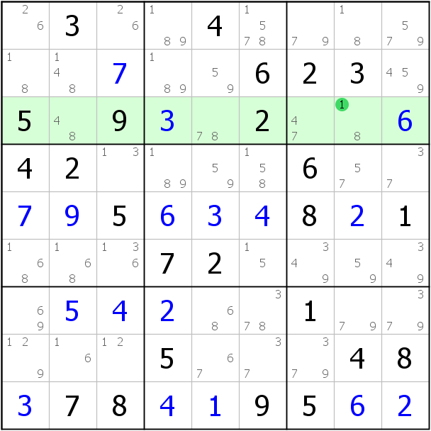
同理，r3中只有c8能填1。
但是这个例子是在之前用高级技巧删除了r3c2中的候选数1后才出现的。
区块 | Locked Candidates
-
宫区块
当某宫中某候选数只存在于某行（列）时，可删除在其他宫中此行（列）的候选数。
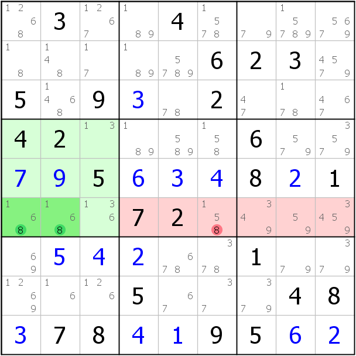
对于b4，8只出现在r6，这两格中必有一个是8，r6其余格不可能再出现8，则r6c6排除8的可能。 -
行列区块
当某行（列）中某候选数只存在于某宫中，可删除此宫中其他行（列）的该候选数。
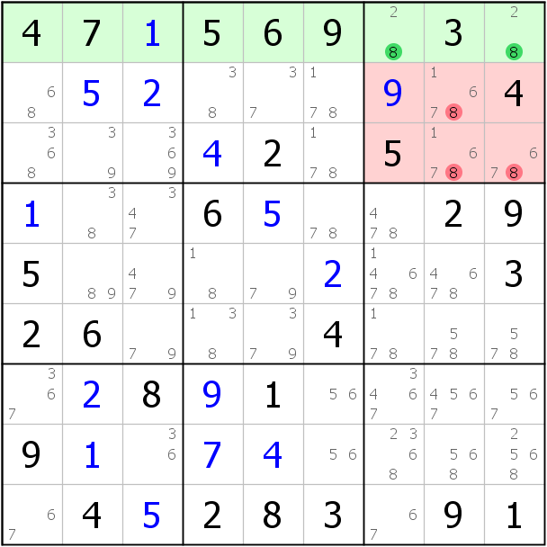
对于c1，8只出现在b3，这两格中必有一个是8，b3中其它位置排除8的可能。 -
级联区块
（待补充）
基础鱼（链列） | Base Fish
在某n个行（列）内，某个数字x只能出现在固定的某n个列（行）内，则该n个列（行）内其他格子不会再出现数字x。
- n=2，矩形对角线法 | X-Wing

对于8，在r59中只出现在c15，所以c15其他行中可以排除8的可能。 - n=3，剑鱼 | Swordfish
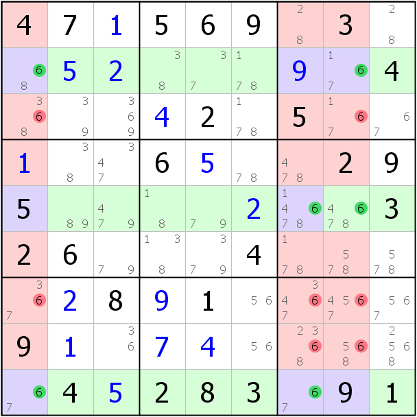
对于6，在r259中只出现在c178，所以c178其他行中可以排除6的可能。
对于这个例子，看到并不是r259c178九个格子中都有6的候选数，这种情况叫做残缺（Incompleted）。 - n=4，水母 | Jellyfish
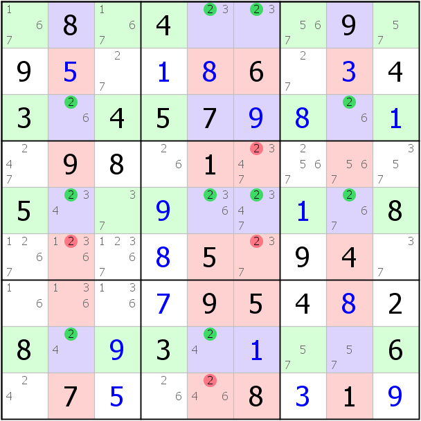
对于2，在r1358中只出现在c2568，所以c2568其他行中可以排除6的可能。 - n=5，海星 | Starfish 或 Squirmbag
- n=6，鲸鱼 | Whale
- n=7，海怪 | Leviathan
数组 | Subset （Pair/Triple/Quadruple）
-
显式 | Naked：在一个区中，如果有n个格都包含且只包含相同的n个候选数，则这n个候选数不能再出现在该区其他的格中。
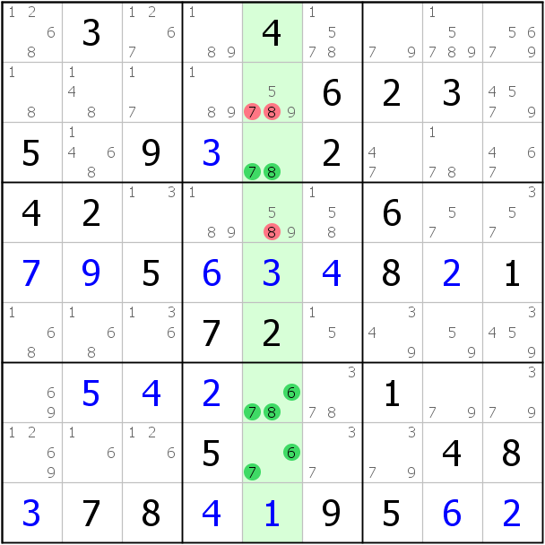
对于c5，r378三个格子中只包含678三个数字，则678只可能出现在这三个格子中，该列其他格子可以排除678的可能性。 -
隐式 | Hidden：在一个区中，如果有n个格的候选数中包含相同的n个候选数，且在该区的其他宫格中不再含有这n个候选数，则这n个候选数所在宫格的除该n个候选数之外的其他候选数将被删除。
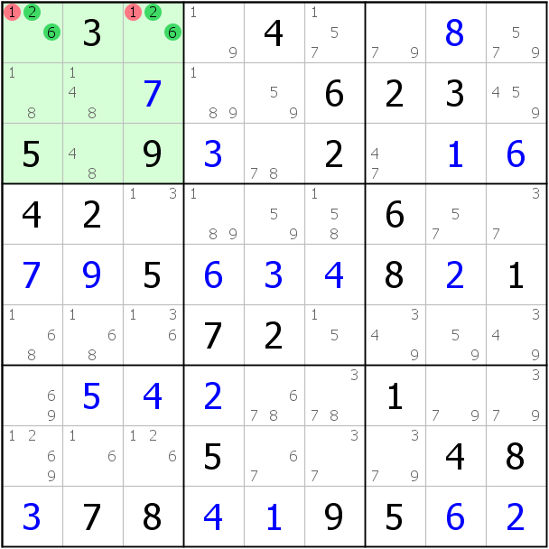
对于b1，只有r1c13中包含26，则这两个格子一个为2一个为6，不可能出现1。
其实对于b1，r1c13以外的三格，还可以看到148的显式集合，显式集合和隐式集合是成对出现的。
一般来说，显式集合使用全标策略更容易看出，隐式集合使用直观策略更容易看出。
进阶技巧
简单带鳍鱼、退化鱼（刺身）、孪生鱼 | Finned Fish & Sashimi Fish & Siamese Fish
- 带鳍X-Wing | Finned X-Wing
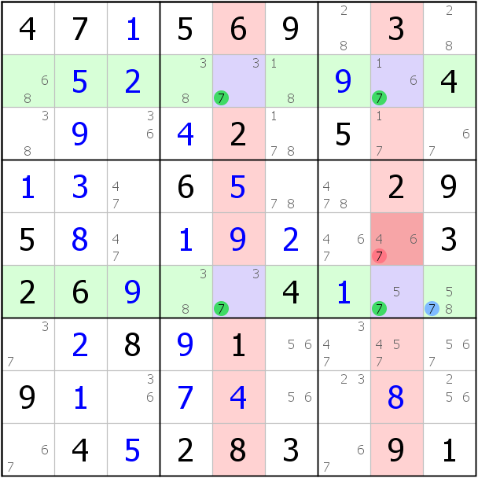
相比与正常的X-Wing，多了r6c9。按照r6c9填7和不填7（形成标准鱼形）两种情况讨论，我们都能排除与r6c9同宫的r5c8中的7。 - 带鳍剑鱼 | Finned Swordfish
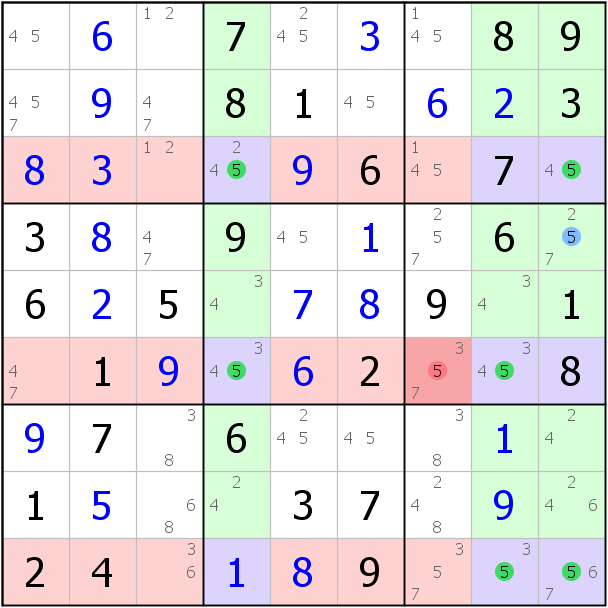 - 带鳍水母/海星/鲸鱼/海怪
略 - 退化X-Wing | Sashimi X-Wing

所谓“退化”就是带鳍的格子缺失。对于这个盘面，r9c8(6)的缺失使它更难被发现。
r9c7(6)为鳍，可以排除r78c8(6)。 - 退化剑鱼 | Sashimi Swordfish
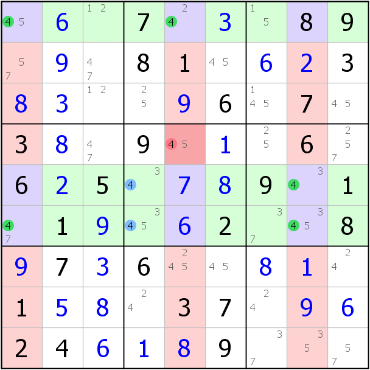
本例有两个鳍，但处于同一宫，所以依旧可以使用该方法。 - 退化水母/海星/鲸鱼/海怪
略 - 孪生鱼
就是两条退化鱼重叠在一起。
简单链
学习一下技巧之前，需要了解链的原理。
强链接：若A为假，则B为真。即A、B至少一个为真。
弱链接：若A为真，则B为假。即A、B至少一个为假。
利用强弱链解题：
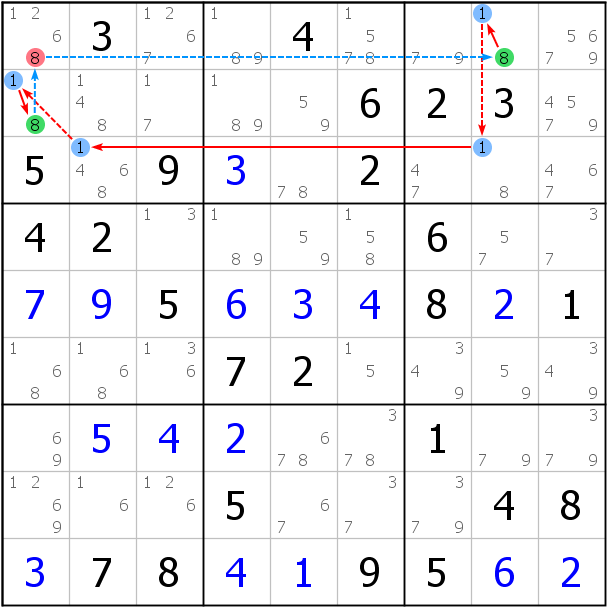
这里可以看到一条从r1c8中的候选数8到r2c1中的候选数8的强弱链：r1c8(8) = r1c8(1) - r3c8(1) = r3c2(1) - r2c1(1) = r2c1(8)（=表示强链接，-表示弱连接）。
这条链由强链接和弱链接交替构成，起点和终点都是都是强链接。
讨论两种情况：
- r1c8填8。
- r1c8不填8 → r1c8填1 ⇢ r3c8不填1 → r3c2填1 ⇢ r2c1不填1 → r2c1填8。
我们发现其实r1c8中的候选数8到r2c1中的候选数8直接相当于形成一条强链接，这两个格子里至少有一个填8。而无论哪种情况，与这两格共同具有弱链接（也叫看到，See）的r1c1都不能填8。
对于上述强弱链，将其顺序颠倒过来（即从r2c1(8)开始，到r1c8(8)结束）也同样行得通，因为其中涉及的链都是双向链，但不是所有的链都是双向的！
虽然强弱链经常成为解难题的强力手段，想直接利用这种方法解题并不容易，找到一条强弱链花掉的时间或许不如试数来的快。接下来将总结几种容易使用的技巧，以提高找强弱链的效率。
以下是几种简单的典型情况。
-
摩天楼 | Skyscraper
呈直角梯形形状。
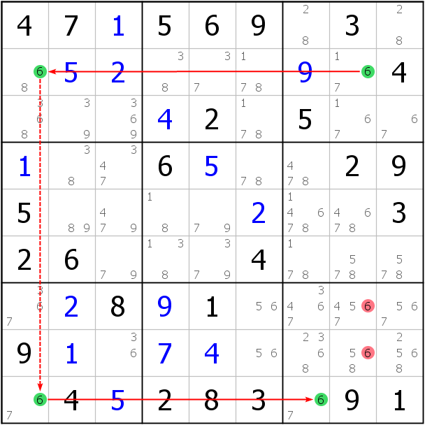 -
双线风筝 | 2-String Kite
两条强链接各有一端落在同一个宫格中。
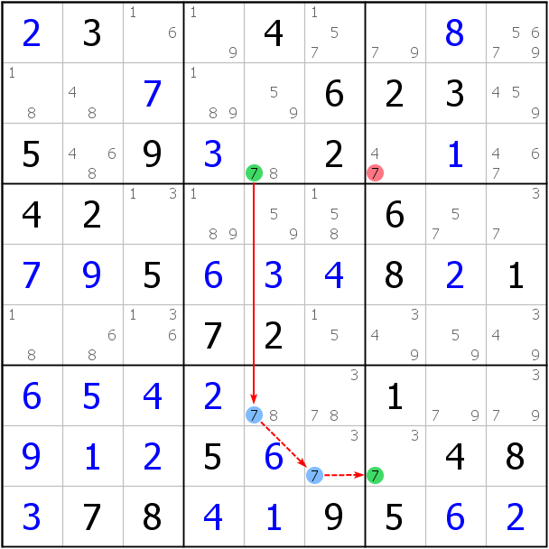 -
多宝鱼（普通双强链） | Turbot Fish
一个行/列内的强链接，一个宫内的强链接。
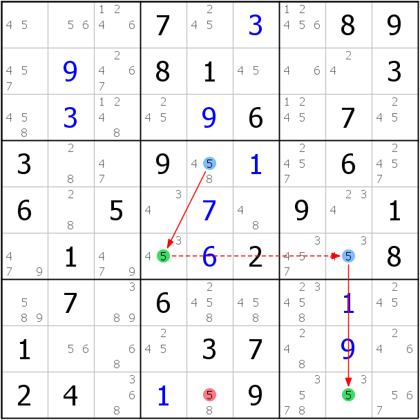 -
空矩形 | Empty Rectangle
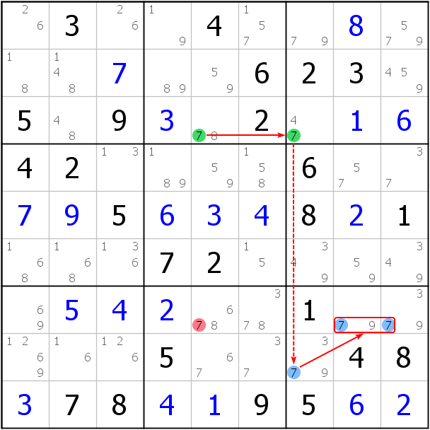 形状类似于多宝鱼，但r7c89中的7看成了一个整体。
再如：
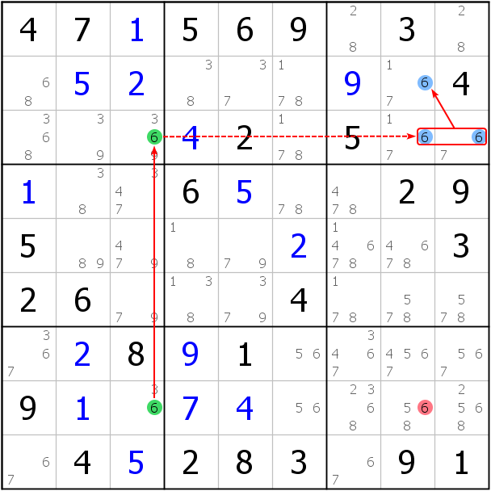
上述例子都是两个强链接和一个弱链接的组合，叫做双强链，实战时大多先尝试找到两个强链接。
简单分支结构 | Wing
-
XY-Wing / XYZ-Wing / WXYZ-Wing
一个格子中的全部数字或除去一个以外的其余数字均与另几个互不相同的双值格中的一个数形成弱链接，除此之外，这些格子还包含一个共有的数。XY-Wing：
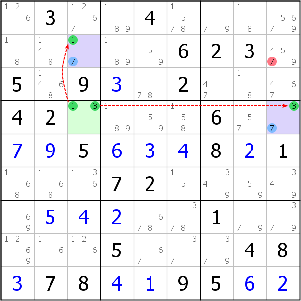
r4c3双值格中的全部数字分别与r2c3和r4c9形成弱链接。且r2c3和r4c9共有数字7，无论r4c3填什么，这两个格子中都会出现一个7，所以它们共同看到的格子排除7的可能。XYZ-Wing：
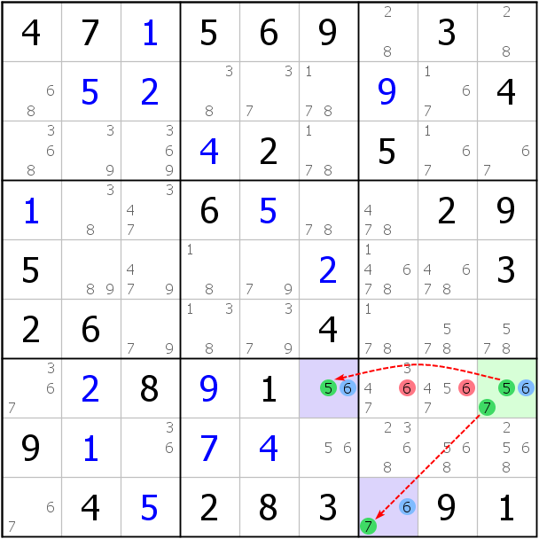
r7c9三值格中的5和7分别与r7c6和r9c7形成弱链接。且它们共有6，无论r7c9填什么，这三个格子中都会出现一个6，所以它们共同看到的格子排除6的可能。 -
W-Wing（Y-Wing）
两个候选数相同的双值格，通过其中一个候选数进行强连接。
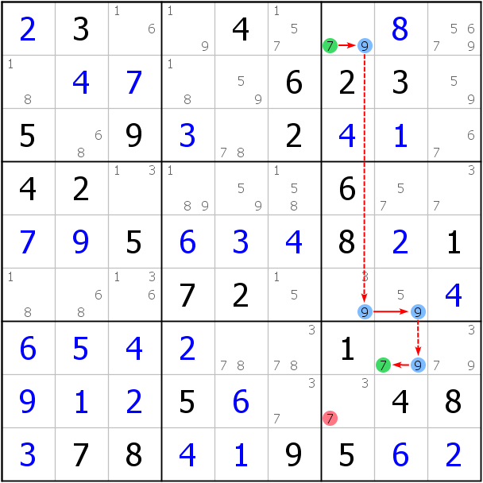
这里两个（79）的格子通过9进行连接。
讲解链用到的第一个例子也是W-Wing。 -
M-Wing
（待补充）
简单致命结构
唯一矩形 | Unique Rectangle
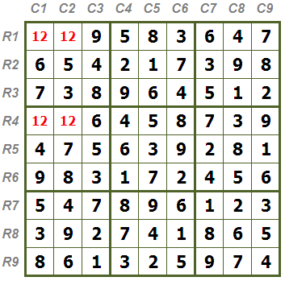
很明显当出现这种情况时，会出现两个解。而标准的数独是有唯一解的，所以出现这种情况时往往意味着做错了。或者，当即将出现类似这种情况时，要将其破坏掉。
上图就是唯一矩形的基本结构。注意这个结构一定是涉及到两个宫的。
（解释：类似于上图的结构，可以发现r1c1无论怎么填，都不会影响矩形外的格子的候选数，因为根据显式数组的理论，r1、r4、c1、c2、b1、b4都不会再有12的候选数了。但如果矩形顶点分散到4个宫，不能保证宫内其它格子不包含12的候选数。）
- 三个双值格
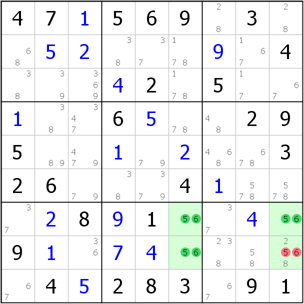
已经有三个格都只能填56，剩下的格子则不能再填5或6。 - 区块：一边双值格，对边多出同一个数
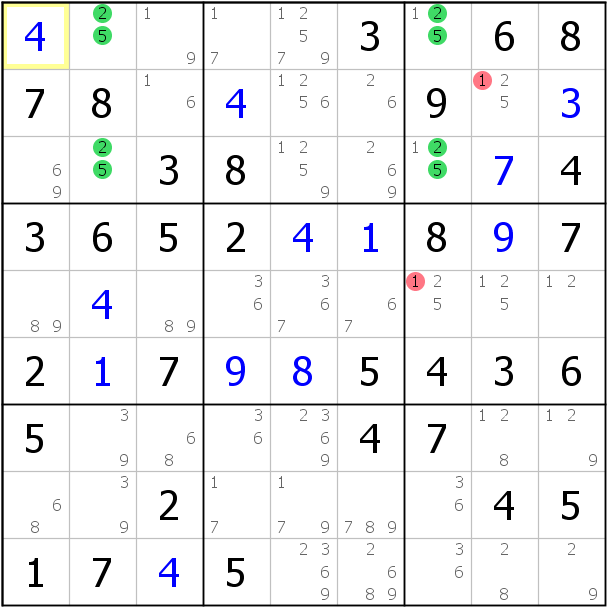
r13c2为25的双值格。对边两格多出1这个候选数，这两个1必有一个为真。 - 待定数组：一边双值格，对边待定数组
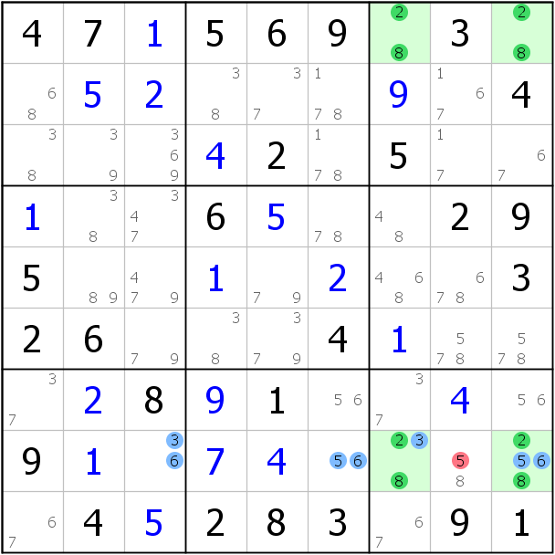
r1c79为双值格，对边所在行r8c3679四格为23568的不完全子集。为避免出现多解，r7c79中28不能同时为真，只能有一个2或一个8，r7c79中的356必有一个为真，两种情况下，r7c3679这四格为2356或3568的完全子集。无论哪种情况，r7其他位置不可能再出现356。 - 共轭：一边双值格，对边共轭对
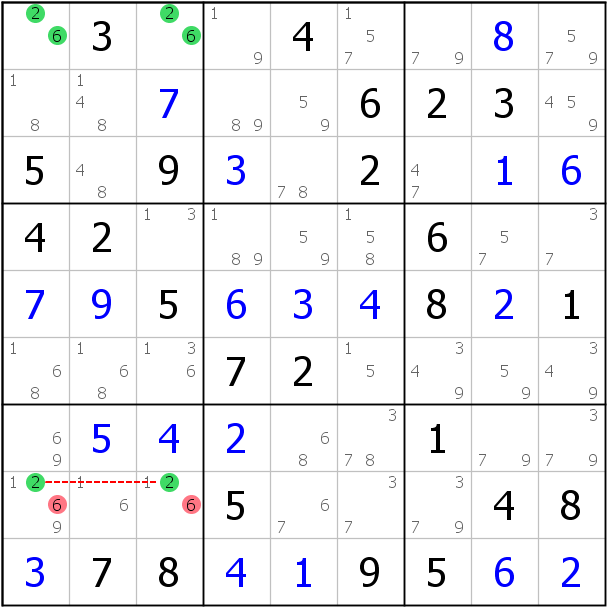
r1c13为双值格，其对边的2之间为强链。r1c13一定是一个2一个6，r8c13必有一个2，如果r8c13再出现一个6将不满足唯一解的要求。 - 对角双值格（或一个双值格），其余格多出同一个数
其实我觉得这个和2原理一样。 - 对角双值格，两组共轭对
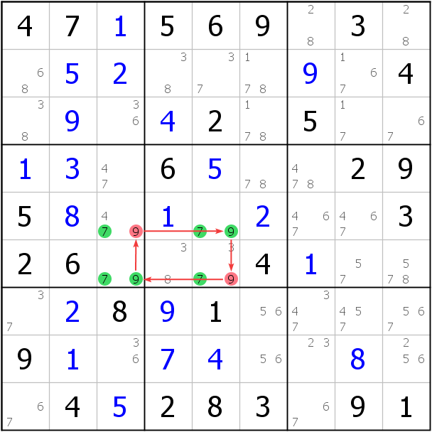
某个对角为双值格，且四个9之间均是共轭关系，另一个对角的9应排除。 - 隐式矩形 | Hidden Rectangle
- 有一个双值格
- 同一个数字的强链接
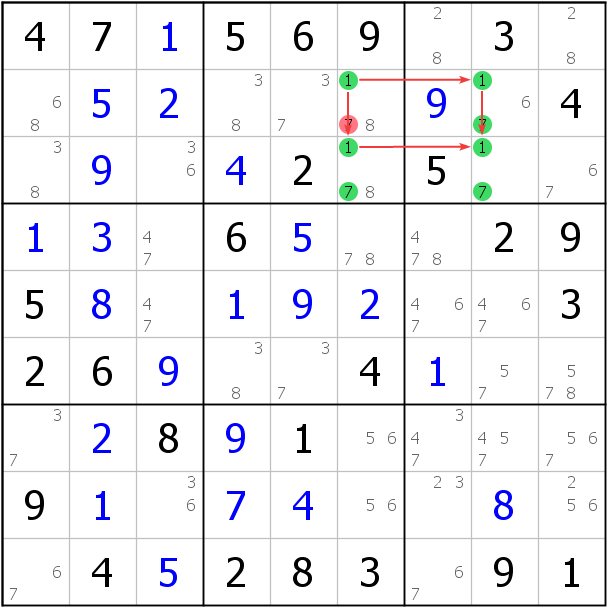
四个1之间均为强链接，双值格对角的7应排除。因为一旦r2c6(7)为真，由强链接的性质r2c8和r3c6填1，r3c8填7，形成多解的情况。
这个方法经常用到，矩形的强链接是十分容易发现的。
其实只需要双值格r3c8的对角r2c6中的1形成两条强链接，条件就已经充足。正如下例：
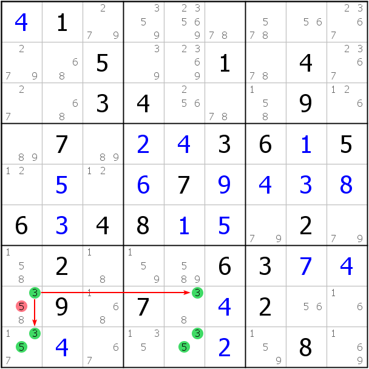
甚至是不完整的矩形：
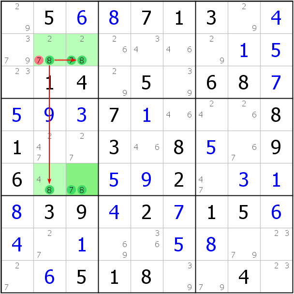
r6c2没有7的候选数，但上述推导过程依旧成立。 - 不同数字的强链接
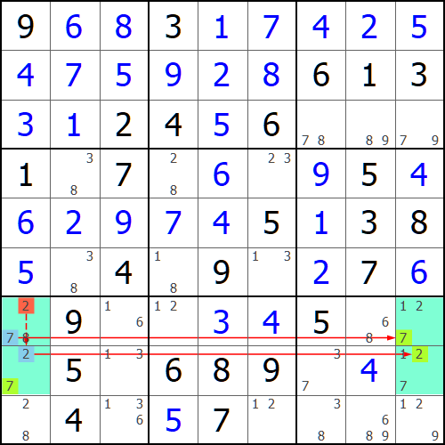
r7(7)和r8(2)成强链，双值格同列的未成强链的2可排除。因为一旦r7c1(2)为真，矩形其它三个顶点的数也被确定，形成多解情况。
- 同一个数字的强链接
- 两个双值格
- 处于对角
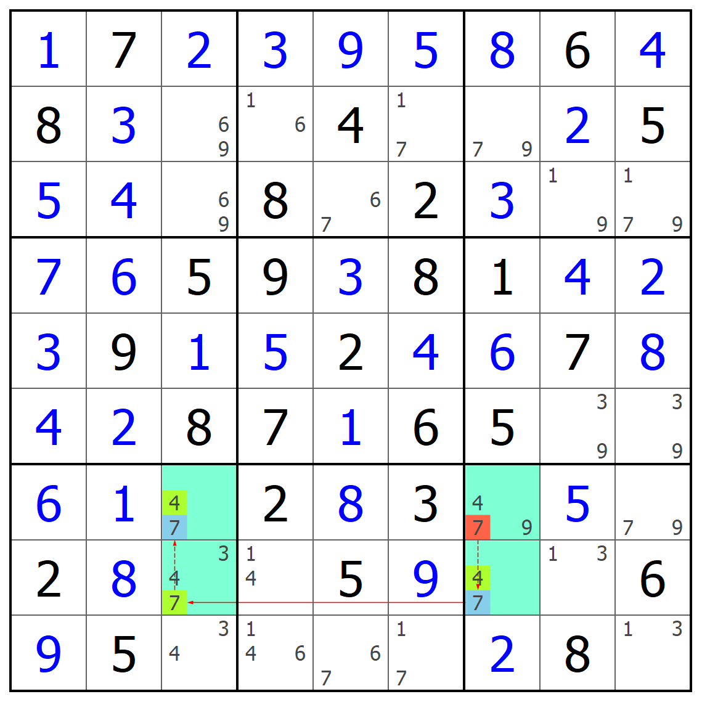 （待补充）
（待补充） - 同行/列
（待补充）
- 处于对角
- 有一个双值格
从上述例子看到，适用唯一矩形的情况往往会出现格子相邻的数对。
唯一环 | Unique Loop
拓展矩形 | Extended Rectangle
可避免矩形 | Avoidable Rectangle
- 三个已填数
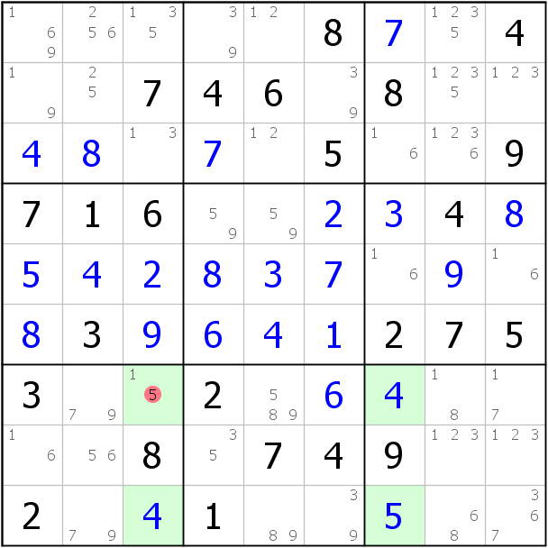
r7c37、r9c37中三个格子已填（注意是“已填”，不是原给定数）。如果r7c3填5，这个矩形只包含45，发现将45对换之后完全不影响盘面其他位置，显然不满足唯一解要求。 - 区块：一边已填，对边多同一个数
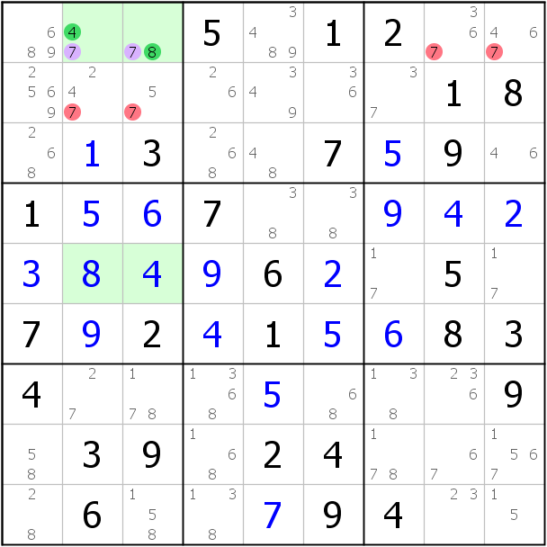
r5c23已填，r1c23中的48如果全为真则不满足唯一解要求，故r1c23(7)中必有一个为真。 - 待定数组：一边已填，对边出现待定数组
（待补充） - 对角：一个已填，相邻两角多出同一个数
- 隐性：一个已填，对角有两组共轭对
（待补充）
全双值坟墓 | Bivalue Universal Grave + 1
简称BUG + 1。
BUG指的是一个盘势中所有剩余宫格的候选数均为双值，且每个候选数对于每行、列、宫来说出现且只出现两次。这样的情况将导致题目多解或无解。

此局距BUG只差一步，这样的盘面称为BUG + 1。标红的2或5都是在行、列、宫内只出现两次，如果为真，将形成BUG。
扩展
- 待定数
- 待定数组
- 共轭
高级技巧
待定数组 | Almost Locked Set
待定数组定义：“n+m个格的候选数中包含相同的n个候选数”的情况，即这n+m个格子中会有n个格子构成这n个数的数组，但目前还未确定到底是哪n个格子。
欠一数组 | Almost Locked Candidates
定义中m=1的情况。
（例子待补充）
融合待定数组 | Sue de Coq
（例子待补充）
跨区数组 | Extended Subset
均衡数组 | Aligned Subset Exclusion
一种比较暴力的解法
扩展
两个待定数组共有的候选数为它们的共享候选数。其中有强链接或弱链接关系的为完全共享候选数（Restricted Common Candidate，简称RCC），否则为不完全共享候选数。
-
Almost Locked Set XZ-Rule
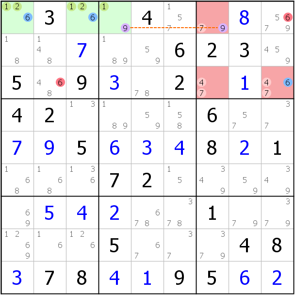 图中，绿色格子是关于（1269）的不完全子集，红色格子是关于（4679）的不完全子集，9之间有强链接，为完全共享候选数，6为不完全共享候选数，那么所有6共同看到的r1c9和r3c2排除6的可能。
假设r1c9填6，我们发现绿色和红色的格子将都不能填6。此时，绿色格子是关于（129）的完全子集，红色格子是关于（479）的完全子集，而两个能填9的格子间有链接关系，最终会导致其中一个格子无法填9，产生矛盾。再一例：
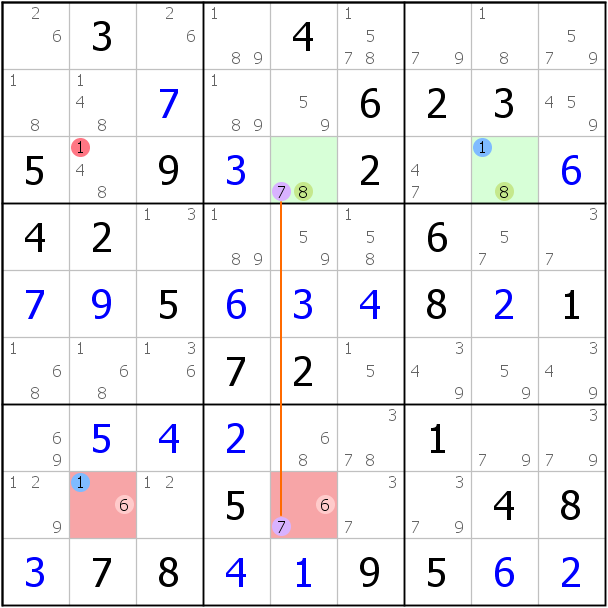
同理。 -
Almost Locked XY-Wing
难度较高，实战难操作。 -
Almost Locked Set Chain
难度极高，实战难操作。
复杂链
标准链
-
同数链 | X-Chain
-
双值格链 | XY-Chain
找到弱链接将多个双值格串联到一起即可形成强弱链。
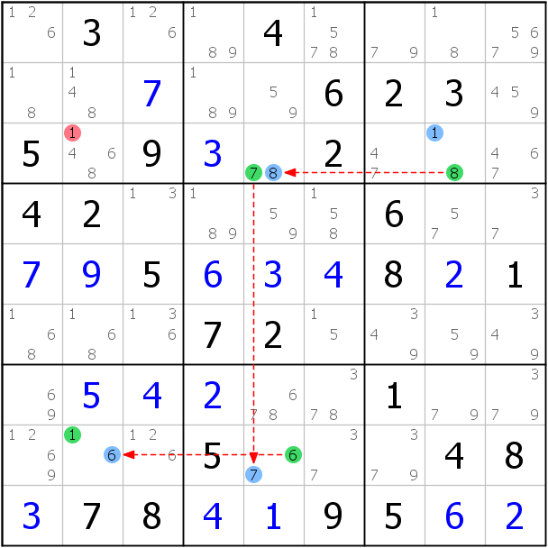
该强弱链首尾的1可帮助排除掉r3c2中的1。
三个双值格组成的链形式上等同于XY-Wing，多于三个双值格组成的链称为XY Chain。- 特殊情况：远程（遥控）数对 | Remote Pair
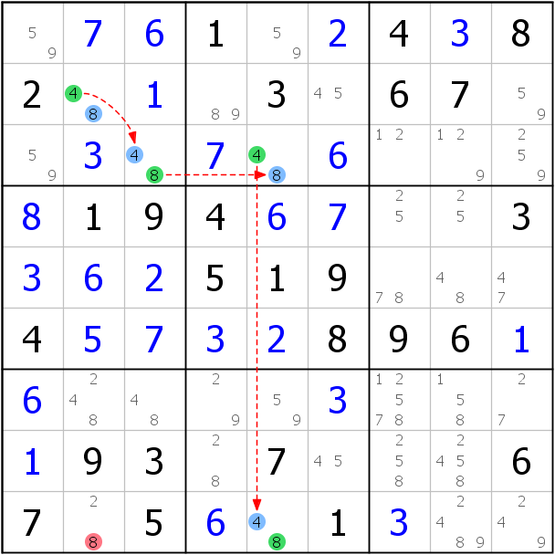
- 特殊情况：远程（遥控）数对 | Remote Pair
-
首尾异数链 | XY-X-Chain
-
不连续环 | Discontinuous (Nice) Loop
-
自噬链 | Cannibalistic AIC
待定数组（链）
技巧
- 2+3直观法
- 带小弟直观法
待定唯一矩形
强制链
环
动态链
构造链
涂色法
如果发现某个数字存在很多共轭对，可以尝试涂色法。涂色发本质上是一种暴力找单数链的方法。
-
单色 | Simple Colors
- Color Trap
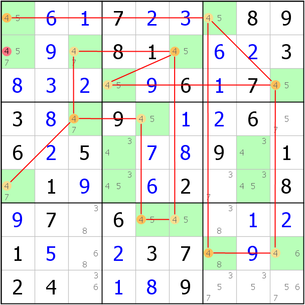
可以看到盘面中存在关于4的多组共轭对，将共轭的4涂上不同的颜色。（例如从r1c1开始，r1c1涂深橙色，则r1c7涂浅橙色，则r3c9、r8c7涂深橙色……。）
根据双向强链接的性质，深色和浅色中有且仅有一种为真。而未涂色的r2c1(4)同时被深色和浅色看到，必为假。 - Color Wrap
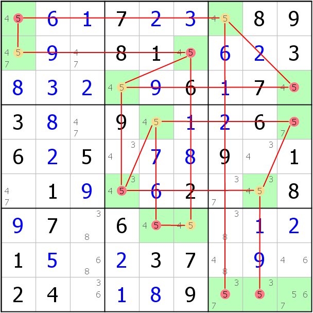
按照上述方法对5涂色，红色和橙色中有且仅有一种为真。而r9出现两个红色，说明红色不可能为真。
- Color Trap
-
双色 | Multi Colors
-
情况1
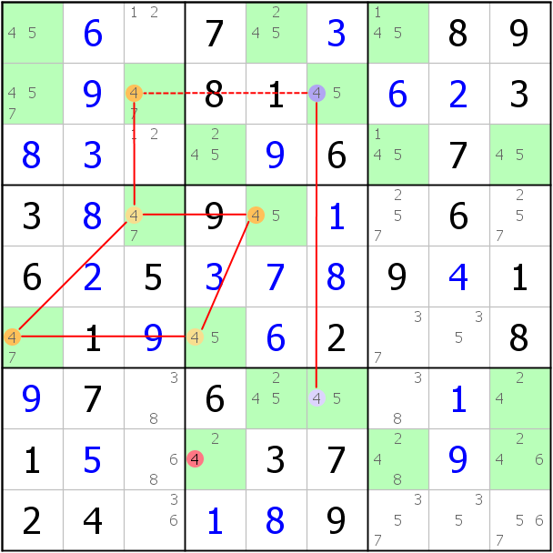
对于本盘面，4的强链接分成左右两组，不互通。但由于r2c3和r2c6之间存在弱链接，这使得两组涂色的候选数之间依旧有某种联系。我们可以尝试用多种颜色涂色，这里用了深浅橙色和深浅紫色两组颜色。注意这里r2c3和r2c6之间的弱链接两端均为深色，这便于之后的推理。
这时出现四种情况：
1. 深橙色和深紫色为真。（从r2c3和r2c6之间的弱链接可知这是不可能的）
2. 深橙色和浅紫色为真。
3. 浅橙色和深紫色为真。
4. 浅橙色和浅紫色为真。可能为真的三种情况都至少有一种浅色为真，回到盘面，可知r6c4(4)和r7c6(4)中至少一个为真，它们共同看见的r8c4(4)被排除。
-
情况2
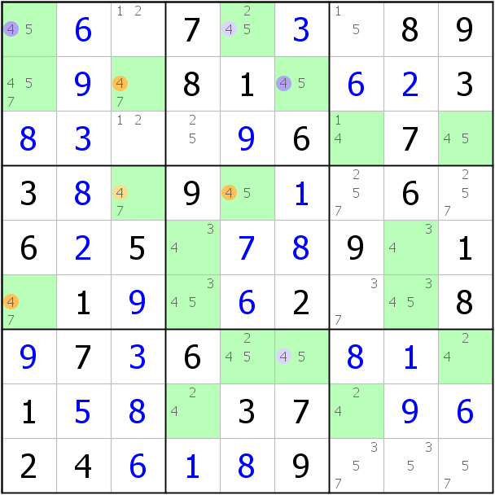
按照上述方法对4涂色后发现r4c5(4)同时看到浅橙色和浅紫色，说明所有的深橙色为假。
-
袋鼠
神圣技巧
复杂致命结构
变异鱼
- 宫内鱼 | Franken Fish
- 内鳍
- 自噬鳍
- 交叉鱼
- 复杂鱼转换
鱼雷
网
后续
软件
- Hodoku
- JSudoku
- Sudoku Explainer
- YZF-sudoku
- 全民数独
- 弈数独
- sudoku10000+
- 数独玩家
题库
工具
数独大佬
小向： 知乎 B站
解素商： B站
探长： B站
宋田夫： B站
数独吧和数毒吧上有更多技巧。